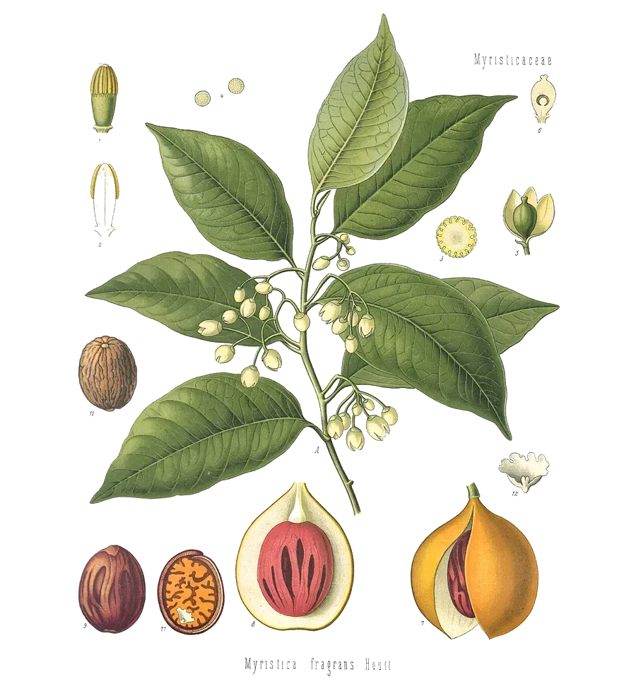

Limonene’s close relative: the same ring, with the tail’s double bond turned toward it.
- Scent
- fresh, herbal, softly pine-like, lightly floral Reference description: “sweet, pine odor” (HSDB)
- Found in
- nutmeg, tea tree, apple, cumin, lilac, sage and rosemary, pine and fir, marjoram.
- In High Forest
- Grounding Rest as a flavouring ingredient; amount not published
- Molar mass
- 136.23 g/mol
- Boiling point
- 183–185 °C JECFA
- CAS number
- 586-62-9
- FEMA number
- 3046
- Record
- PubChem 11463
- Systematic name
- 1-methyl-4-propan-2-ylidenecyclohexene
What has been studied highest rung: animals
- AnimalsIn a 2013 study, mice breathing air that carried terpinolene moved about less, which the authors read as sedation.16
- Not knownWhether the mouse result means anything for people. There are no human data.